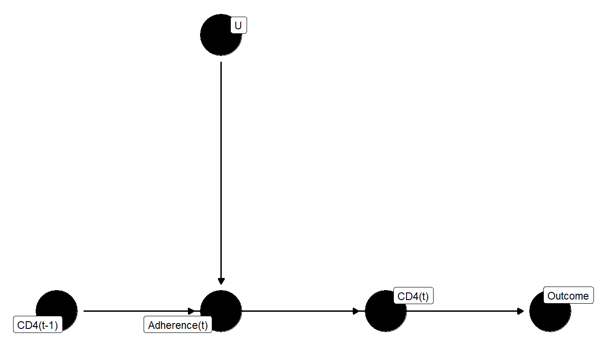
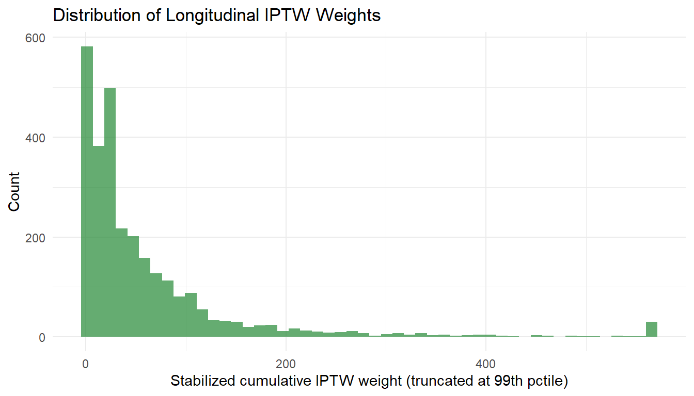
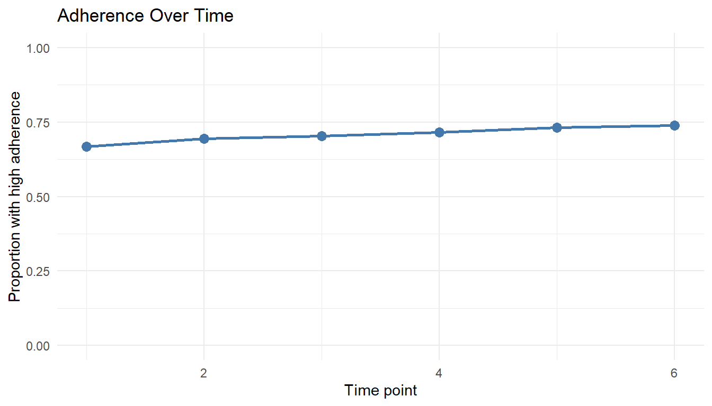

library(tidyverse)Warning: package 'stringr' was built under R version 4.4.3source("_data/load-haart-cohort.R")An illustrated guide to why conditioning on adherence biases causal effects, and how longitudinal TMLE and LMTP address this
Why conditioning on adherence biases causal effects, and how longitudinal TMLE and LMTP address this
In randomized trials, the intent-to-treat (ITT) analysis compares groups as randomized, regardless of whether patients actually took their medication. But in pharmacoepidemiology, we often want to know:
What would have happened if patients had actually followed a particular treatment strategy?
This chapter addresses imperfect adherence, a central challenge in longitudinal causal inference. We show:
The motivating example: antiretroviral therapy (ART) adherence and HIV virologic suppression.
lmtp package for modified treatment policies including stochastic adherence interventionsThis chapter is educational. Causal conclusions depend on identification assumptions (e.g., consistency, exchangeability, positivity) and on diagnostic evidence that the data support the target estimand. When flexible machine learning is used for nuisance estimation, valid inference typically requires cross-fitting or a cross-validated TMLE variant, plus appropriate rate conditions.
Before turning to the ART example, it helps to start with a more familiar longitudinal problem.
Suppose we want to estimate the effect of sustained statin use on myocardial infarction over two years using electronic health record data. At each visit, LDL cholesterol helps predict whether a clinician intensifies, continues, or stops statin therapy. But LDL is not just a confounder. It is also affected by prior statin use.
That means LDL plays two roles at once:
The DAG below shows this structure. Statin use in year 1 (\(A_1\)) lowers LDL at the end of year 1 (\(L_1\)). Lower LDL makes year-2 statin prescribing (\(A_2\)) less likely. LDL also directly affects heart attack risk (\(Y\)). Baseline covariates \(W\) (age, smoking, family history) affect everything.
dag_statin <- dagify(
A1 ~ W, L1 ~ A1 + W, A2 ~ L1 + W, Y ~ A1 + A2 + L1 + W,
exposure = "A1", outcome = "Y",
labels = c(W = "Baseline\n(age, smoking)", A1 = "Statin\nyear 1",
L1 = "LDL\nend of year 1", A2 = "Statin\nyear 2", Y = "MI by\nyear 2"),
coords = list(
x = c(W = 0, A1 = 1, L1 = 2, A2 = 3, Y = 4),
y = c(W = 0.8, A1 = 0, L1 = 0.8, A2 = 0, Y = 0)
)
)
ggdag(dag_statin, text = FALSE, use_labels = "label", text_size = 2.8) +
theme_dag()
Now imagine fitting a standard outcome regression for myocardial infarction that adjusts for current statin use and current LDL. This feels reasonable from a predictive standpoint, but causally it is a trap. By conditioning on LDL at the end of year 1, we block part of the causal pathway \(A_1 \to L_1 \to Y\) that we actually want to capture. We may also open collider bias paths. But if we omit LDL from the model, the effect of year-2 statin use (\(A_2\)) is confounded.
This is the core longitudinal problem:
A time-varying covariate can be both a confounder for future treatment and a mediator of past treatment. Standard regression cannot handle both roles at once.
The toy simulation below shows this concretely. A naive regression that conditions on \(L_1\) attenuates the coefficient on \(A_1\) because it blocks the indirect pathway. A sequential g-computation approach that works backwards through time avoids this trap.
# Why naive regression fails with time-varying confounding
set.seed(2025)
n <- 1000
W <- rnorm(n)
A1 <- rbinom(n, 1, plogis(0.3 * W))
L1 <- rnorm(n, 0.5 * A1 + 0.4 * W) # L1 affected by A1
A2 <- rbinom(n, 1, plogis(0.5 * L1))
Y <- rbinom(n, 1, plogis(-1.5 + 0.4 * A1 + 0.4 * A2 + 0.3 * L1 + 0.3 * W))
# Naive: condition on L1 (blocks A1 -> L1 -> Y pathway)
naive_mod <- glm(Y ~ A1 + A2 + L1 + W, family = binomial)
cat("Naive coefficient on A1 (biased by conditioning on L1):",
round(coef(naive_mod)["A1"], 3), "\n")Naive coefficient on A1 (biased by conditioning on L1): 0.168 # Better: sequential g-computation (simplified)
# Step 1: model Y given full history
Q2 <- glm(Y ~ A1 + A2 + L1 + W, family = binomial)
# Step 2: predict under A2=1, then regress on (A1, W) only
Q2_pred <- predict(Q2,
newdata = data.frame(A1 = A1, A2 = 1, L1 = L1, W = W),
type = "response")
Q1 <- glm(Q2_pred ~ A1 + W, family = quasibinomial)
# Contrast: always treat vs never treat
p11 <- mean(predict(Q1,
newdata = data.frame(A1 = 1, W = W),
type = "response"))
p00_Q2 <- predict(Q2,
newdata = data.frame(A1 = 0, A2 = 0, L1 = L1, W = W),
type = "response")
Q1_00 <- glm(p00_Q2 ~ A1 + W, family = quasibinomial)
p00 <- mean(predict(Q1_00,
newdata = data.frame(A1 = 0, W = W),
type = "response"))
cat("Sequential g-comp ATE (always treat vs never treat):",
round(p11 - p00, 3), "\n")Sequential g-comp ATE (always treat vs never treat): 0.152 The sequential g-computation estimate avoids conditioning on \(L_1\) at the wrong stage. It conditions on \(L_1\) when modeling the final outcome (to deconfound \(A_2\)), then integrates \(L_1\) out in the backwards regression (to preserve \(A_1\)’s mediated effect). This is exactly the logic that longitudinal TMLE formalizes and makes doubly robust.
We will now formalize this problem using a longer worked example from HIV treatment.
The ART setting has the same causal structure as the statin-LDL example above: past treatment affects current health status, current health status affects future treatment, and both influence the final outcome. That feedback is exactly why longitudinal g-methods are needed.
A public health agency wants to evaluate antiretroviral therapy strategies for people living with HIV. The key question:
What is the probability of virologic suppression (HIV RNA < 200 copies/mL) at 12 months if all patients maintained high adherence to their ART regimen, compared to the observed adherence pattern?
In practice, ART adherence varies over time due to:
Critically, adherence at each time point is influenced by time-varying health status, and time-varying health status is itself influenced by past adherence. This creates time-varying confounding affected by prior treatment, a situation where standard methods fail.
Adults living with HIV initiating a new ART regimen
Virologic suppression (HIV RNA < 200 copies/mL) at 12 months
Should adherence support programs be intensified? How much improvement in suppression could be expected from perfect adherence?
Before introducing the correct methods, let us understand why standard approaches fail.
Consider a simple model: \[ \text{logit}\big(P(Y = 1)\big) = \beta_0 + \beta_1 \cdot \text{Cumulative Adherence} + \beta_2 \cdot \text{Baseline CD4} \]
This conditions on adherence. But why is that a problem?
The problem is that adherence is affected by prior health status, which also affects the outcome. Adherence is simultaneously:
Conditioning on adherence opens backdoor paths through time-varying confounders, introducing selection bias. This is a fundamental result from causal inference theory.
Think of it this way: If you compare patients who adhered well vs. poorly, you are not comparing like-with-like. Patients who adhered poorly may have done so because they were sicker, and that sickness, not the low adherence, may explain worse outcomes. Conditioning on adherence mixes up the reason for adherence with the effect of adherence.
dag_collider <- dagify(
Adherence ~ CD4_prev + U,
CD4 ~ Adherence + CD4_prev,
Outcome ~ CD4 + CD4_prev,
coords = list(
x = c(CD4_prev = 0, Adherence = 1.5, CD4 = 3, Outcome = 4.5, U = 1.5),
y = c(CD4_prev = 0, Adherence = 0, CD4 = 0, Outcome = 0, U = 1)
),
labels = c(CD4_prev = "CD4(t-1)", Adherence = "Adherence(t)",
CD4 = "CD4(t)", Outcome = "Outcome", U = "U")
)
ggdag(dag_collider, text = FALSE, use_labels = "label", text_size = 3) +
theme_dag()
When you condition on adherence at time \(t\), you induce an association between CD4 at time \(t-1\) and unmeasured factors that affect adherence, biasing the effect estimate.
Why does this matter? Once you “hold adherence fixed” in a regression, you create a spurious link between everything that caused adherence. This is collider bias, and it distorts the causal effect estimate in unpredictable ways, sometimes making the treatment look more effective, sometimes less.
Generalized Estimating Equations (GEE) are popular for longitudinal data, but a GEE model that adjusts for time-varying covariates and conditions on time-varying treatment (adherence) will produce biased estimates for causal effects when time-varying confounders are affected by prior treatment.
The solution: Use g-methods (g-computation, IPTW, or TMLE) that properly handle the time-ordering of treatment, confounders, and outcome.
Plain language: What would the 12-month virologic suppression rate be if every patient maintained high adherence, compared to the naturally observed adherence pattern?
Counterfactual estimand:
Let \(\bar{A} = (A_1, A_2, \ldots, A_T)\) denote the adherence history. Define two regimes:
The estimand is:
\[ \psi = E\big[Y(\bar{a} = \bar{1})\big] - E\big[Y^{\text{obs}}\big] \]
where \(Y(\bar{a} = \bar{1})\) is the potential outcome under the always-high-adherence regime.
We can also define stochastic interventions that shift the probability of high adherence (e.g., increase it by 20%) rather than forcing it to 100%, which is more realistic and less prone to positivity violations.
The longitudinal data structure for patient \(i\) at time \(t\):
\[ O_i = \big(W_i, \; L_{i,1}, A_{i,1}, C_{i,1}, \; L_{i,2}, A_{i,2}, C_{i,2}, \; \ldots, \; L_{i,T}, A_{i,T}, C_{i,T}, \; Y_i\big) \]
Where:
The key causal feature: \(L_t\) is affected by past treatment \(\bar{A}_{t-1}\) and also affects future treatment \(A_t\) and the outcome \(Y\). This is time-varying confounding affected by prior treatment.
As discussed in Chapter 1.2, identification requires consistency, exchangeability, and positivity. In the longitudinal setting, these assumptions must hold at every time point (sequential versions):
Sequential exchangeability: \[ Y(\bar{a}) \perp\!\!\!\perp A_t \mid \bar{L}_t, \bar{A}_{t-1}, W \quad \text{for all } t \] At each time point, treatment is as-good-as-random given the observed history.
Sequential positivity: \[ P(A_t = a \mid \bar{L}_t, \bar{A}_{t-1}, W) > 0 \quad \text{for all } t, a \] Every adherence level must be possible at every time point for every covariate history.
Consistency and conditional independent censoring also apply at each time point, as described in the point-treatment case.
Why does this matter? If unmeasured factors (e.g., substance use severity, housing instability) drive both adherence and outcomes, sequential exchangeability fails. If some patient subgroups never achieve high adherence, positivity fails. Both scenarios lead to biased estimates, regardless of the statistical method used.
Under the above assumptions, the causal quantity we want can be written as a function of observable distributions. Intuitively, we need to (1) predict the outcome given the full treatment and covariate history, and then (2) average those predictions over the distribution of covariates that would arise under the intervention. The G-computation formula formalizes this:
\[ E[Y(\bar{a})] = \sum_{\bar{l}} E[Y \mid \bar{A} = \bar{a}, \bar{L} = \bar{l}, W] \prod_t P(L_t = l_t \mid \bar{A}_{t-1}, \bar{L}_{t-1}, W) \]
This is a high-dimensional sum (or integral, for continuous covariates) that iterates over all possible covariate histories. In practice, it is estimated via sequential regression or TMLE rather than by direct computation.
The good news: This formula tells us exactly what we need to estimate. The assumptions above bridge the gap from the causal question (what would happen) to a statistical quantity we can estimate from observed data (what did happen, reweighted or modeled appropriately).
| Method | Approach | Limitation |
|---|---|---|
| GEE with time-varying covariates | Conditions on \(L_t\) directly | Biased under time-varying confounding |
| Marginal structural model (MSM) via IPTW | Reweights by cumulative propensity | Products of weights become extreme |
| Longitudinal G-computation | Sequential outcome regression | Fully parametric; error compounds |
| Longitudinal TMLE (LTMLE) | Sequential targeting | Best properties but complex |
| LMTP | Modified treatment policies with TMLE | Handles stochastic interventions naturally |
We implement the last two approaches.
Why LTMLE and LMTP? These methods combine the strengths of outcome modeling and propensity weighting. They handle the feedback loop between treatment and confounders, avoid extreme weights, provide doubly robust estimation, and support flexible machine learning for nuisance parameter estimation.
We simulate a realistic longitudinal HIV cohort with 6 monthly time points.
library(tidyverse)
set.seed(2026)
n <- 3000
T_max <- 6 # 6 monthly intervals (representing a 12-month follow-up, bi-monthly)
# --- Baseline covariates ---
W_age <- rnorm(n, mean = 38, sd = 10)
W_male <- rbinom(n, 1, 0.65)
W_cd4_bl <- rnorm(n, mean = 350, sd = 150) # baseline CD4
W_cd4_bl <- pmax(50, W_cd4_bl) # floor at 50
W_vl_bl <- rnorm(n, mean = 4.5, sd = 0.8) # baseline log10 viral load
W_depress <- rbinom(n, 1, 0.30) # baseline depression
# --- Containers for longitudinal data ---
L_cd4 <- matrix(NA, n, T_max) # time-varying CD4
L_sympt <- matrix(NA, n, T_max) # time-varying symptom burden
A_adh <- matrix(NA, n, T_max) # adherence at each time
C_cens <- matrix(0, n, T_max) # censoring indicator
alive <- rep(TRUE, n) # tracking who is still observed
# --- Simulate longitudinal process ---
for (t in 1:T_max) {
# Previous adherence (for t=1, use a starting value)
if (t == 1) {
A_prev <- rbinom(n, 1, 0.7) # initial adherence tendency
} else {
A_prev <- A_adh[, t - 1]
A_prev[is.na(A_prev)] <- 0
}
# Previous CD4 (for t=1, use baseline)
cd4_prev <- if (t == 1) W_cd4_bl else L_cd4[, t - 1]
cd4_prev[is.na(cd4_prev)] <- W_cd4_bl[is.na(cd4_prev)]
# --- Time-varying CD4 ---
# CD4 increases with adherence, depends on history
L_cd4[, t] <- pmax(50,
cd4_prev +
rnorm(n, mean = 30 * A_prev - 10 * (1 - A_prev), sd = 40) +
-0.5 * (W_age - 38) +
20 * W_male
)
# --- Time-varying symptom burden ---
# Higher with low CD4, depression; reduced by adherence
L_sympt[, t] <- rbinom(n, 1,
plogis(-1.5 + -0.003 * L_cd4[, t] + 0.8 * W_depress + -0.5 * A_prev +
0.01 * (W_age - 38))
)
# --- Adherence at time t ---
# Affected by: symptoms (reduce adherence), CD4 response (feedback),
# prior adherence (habit), depression, age
lp_adh <- 0.5 +
-0.8 * L_sympt[, t] +
0.002 * (L_cd4[, t] - 350) +
0.6 * A_prev +
-0.7 * W_depress +
0.01 * (W_age - 38) +
0.2 * W_male
A_adh[, t] <- rbinom(n, 1, plogis(lp_adh))
# --- Censoring ---
# More likely with low CD4, symptoms, low adherence
lp_cens <- -4.0 +
-0.002 * L_cd4[, t] +
0.5 * L_sympt[, t] +
-0.3 * A_adh[, t] +
0.5 * W_depress
C_cens[, t] <- rbinom(n, 1, plogis(lp_cens)) * alive
alive <- alive & (C_cens[, t] == 0)
# Set future values to NA for censored individuals
if (t < T_max) {
A_adh[!alive, (t+1):T_max] <- NA
L_cd4[!alive, (t+1):T_max] <- NA
L_sympt[!alive, (t+1):T_max] <- NA
C_cens[!alive, (t+1):T_max] <- NA
}
}
# --- Outcome: virologic suppression at end of follow-up ---
# Depends on cumulative adherence, final CD4, baseline VL
cum_adh <- rowMeans(A_adh, na.rm = TRUE)
final_cd4 <- apply(L_cd4, 1, function(x) {
valid <- x[!is.na(x)]
if (length(valid) > 0) tail(valid, 1) else NA
})
lp_outcome <- -1.0 +
2.5 * cum_adh +
0.003 * (final_cd4 - 350) +
-0.6 * W_vl_bl +
-0.3 * W_depress +
0.02 * W_male +
0.8 * cum_adh * (final_cd4 > 400) # interaction: adherence more effective with good immune response
Y_supp <- rbinom(n, 1, plogis(lp_outcome))
# Censored individuals: outcome is missing
Y_supp[!alive] <- NA
cat("Sample size:", n, "\n")
#> Sample size: 3000
cat("Censored by end:", sum(!alive), "(", round(100*mean(!alive), 1), "%)\n")
#> Censored by end: 152 ( 5.1 %)
cat("Among uncensored, suppression rate:", round(mean(Y_supp[alive]), 3), "\n")
#> Among uncensored, suppression rate: 0.344
cat("Mean cumulative adherence:", round(mean(cum_adh, na.rm=TRUE), 3), "\n")
#> Mean cumulative adherence: 0.709We can compute the counterfactual suppression rate under always-high adherence from the structural model. Since the true DGP is complex (with feedback), we approximate using simulation:
# Simulate counterfactual under always-high adherence (A_t = 1 for all t)
set.seed(2026)
cf_cd4 <- matrix(NA, n, T_max)
cf_sympt <- matrix(NA, n, T_max)
for (t in 1:T_max) {
cd4_prev_cf <- if (t == 1) W_cd4_bl else cf_cd4[, t - 1]
A_prev_cf <- 1 # always high adherence
cf_cd4[, t] <- pmax(50,
cd4_prev_cf +
rnorm(n, mean = 30 * 1 - 10 * 0, sd = 40) +
-0.5 * (W_age - 38) + 20 * W_male
)
cf_sympt[, t] <- rbinom(n, 1,
plogis(-1.5 + -0.003 * cf_cd4[, t] + 0.8 * W_depress + -0.5 * 1 +
0.01 * (W_age - 38))
)
}
cf_cum_adh <- 1.0 # perfect adherence
cf_final_cd4 <- cf_cd4[, T_max]
lp_cf <- -1.0 +
2.5 * cf_cum_adh +
0.003 * (cf_final_cd4 - 350) +
-0.6 * W_vl_bl +
-0.3 * W_depress +
0.02 * W_male +
0.8 * cf_cum_adh * (cf_final_cd4 > 400)
true_suppression_perfect <- mean(plogis(lp_cf))
true_suppression_observed <- mean(plogis(lp_outcome), na.rm = TRUE)
cat("True suppression under always-high adherence:", round(true_suppression_perfect, 3), "\n")
#> True suppression under always-high adherence: 0.542
cat("True suppression under observed adherence: ", round(true_suppression_observed, 3), "\n")
#> True suppression under observed adherence: 0.336
cat("True effect of perfect adherence: ", round(true_suppression_perfect - true_suppression_observed, 3), "\n")
#> True effect of perfect adherence: 0.206# Build a wide-format dataframe for analysis
dat_wide <- tibble(
id = 1:n,
age = W_age,
male = W_male,
cd4_bl = W_cd4_bl,
vl_bl = W_vl_bl,
depress = W_depress
)
for (t in 1:T_max) {
dat_wide[[paste0("cd4_", t)]] <- L_cd4[, t]
dat_wide[[paste0("sympt_", t)]] <- L_sympt[, t]
dat_wide[[paste0("A_", t)]] <- A_adh[, t]
dat_wide[[paste0("C_", t)]] <- C_cens[, t]
}
dat_wide$Y <- Y_supp
# For long format (useful for some analyses)
dat_long <- dat_wide %>%
pivot_longer(
cols = matches("^(cd4|sympt|A|C)_\\d+$"),
names_to = c(".value", "time"),
names_pattern = "(\\w+)_(\\d+)"
) %>%
mutate(time = as.integer(time)) %>%
arrange(id, time)
glimpse(dat_long)
#> Rows: 18,000
#> Columns: 12
#> $ id <int> 1, 1, 1, 1, 1, 1, 2, 2, 2, 2, 2, 2, 3, 3, 3, 3, 3, 3, 4, 4, 4,…
#> $ age <dbl> 43.20589, 43.20589, 43.20589, 43.20589, 43.20589, 43.20589, 27…
#> $ male <int> 1, 1, 1, 1, 1, 1, 1, 1, 1, 1, 1, 1, 1, 1, 1, 1, 1, 1, 1, 1, 1,…
#> $ cd4_bl <dbl> 105.6647, 105.6647, 105.6647, 105.6647, 105.6647, 105.6647, 17…
#> $ vl_bl <dbl> 3.480404, 3.480404, 3.480404, 3.480404, 3.480404, 3.480404, 4.…
#> $ depress <int> 1, 1, 1, 1, 1, 1, 1, 1, 1, 1, 1, 1, 0, 0, 0, 0, 0, 0, 0, 0, 0,…
#> $ Y <int> 1, 1, 1, 1, 1, 1, 0, 0, 0, 0, 0, 0, 0, 0, 0, 0, 0, 0, 0, 0, 0,…
#> $ time <int> 1, 2, 3, 4, 5, 6, 1, 2, 3, 4, 5, 6, 1, 2, 3, 4, 5, 6, 1, 2, 3,…
#> $ cd4 <dbl> 129.7946, 142.5491, 252.5217, 315.5199, 421.1039, 450.3287, 23…
#> $ sympt <int> 0, 0, 0, 0, 0, 0, 0, 0, 0, 0, 0, 1, 0, 0, 0, 0, 0, 0, 0, 0, 0,…
#> $ A <int> 1, 1, 1, 1, 1, 1, 0, 1, 1, 1, 0, 0, 1, 1, 1, 1, 0, 1, 1, 0, 0,…
#> $ C <dbl> 0, 0, 0, 0, 0, 0, 0, 0, 0, 0, 0, 0, 0, 0, 0, 0, 0, 0, 0, 0, 0,…First, let us see what happens if we ignore the time-varying confounding structure.
# Only among uncensored
dat_complete <- dat_wide %>% filter(!is.na(Y))
dat_complete$cum_adh <- cum_adh[alive]
naive_gee <- glm(Y ~ cum_adh + cd4_bl + vl_bl + depress + age + male,
family = binomial, data = dat_complete)
# Predicted suppression at 100% vs 50% adherence
nd_perfect <- dat_complete %>% mutate(cum_adh = 1.0)
nd_half <- dat_complete %>% mutate(cum_adh = 0.5)
naive_perfect <- mean(predict(naive_gee, newdata = nd_perfect, type = "response"))
naive_half <- mean(predict(naive_gee, newdata = nd_half, type = "response"))
cat("Naive model:\n")
#> Naive model:
cat(" Predicted suppression at 100% adherence:", round(naive_perfect, 3), "\n")
#> Predicted suppression at 100% adherence: 0.568
cat(" Predicted suppression at 50% adherence: ", round(naive_half, 3), "\n")
#> Predicted suppression at 50% adherence: 0.159
cat(" Difference:", round(naive_perfect - naive_half, 3), "\n")
#> Difference: 0.409
cat("\nThis estimate is biased because it conditions on post-treatment variables.\n")
#>
#> This estimate is biased because it conditions on post-treatment variables.The model treats cumulative adherence as a fixed baseline variable, but adherence is:
The estimate conflates the causal effect of adherence with the reverse causal effect of health on adherence. You cannot untangle “does adherence improve outcomes?” from “do better outcomes sustain adherence?” using standard regression.
The fundamental issue: Standard regression assumes covariates are fixed. But in a longitudinal feedback loop, today’s treatment changes tomorrow’s confounders, which change the day after’s treatment. No single regression equation can properly account for this temporal cascade.
The first correct approach is IPTW, which avoids conditioning on time-varying confounders by reweighting.
# Work in long format; only uncensored observations
dat_long_uc <- dat_long %>%
group_by(id) %>%
filter(cumall(!is.na(A))) %>% # keep complete treatment histories
ungroup()
# Propensity model at each time point
# P(A_t = 1 | history)
dat_long_uc <- dat_long_uc %>%
group_by(id) %>%
mutate(
A_lag = lag(as.double(A), default = 0.7), # lagged adherence
cd4_lag = lag(cd4, default = first(cd4))
) %>%
ungroup()
# Time-specific propensity models
g_models <- list()
dat_long_uc$ps_t <- NA_real_
dat_long_uc$ps_num_t <- NA_real_
for (t_val in 1:T_max) {
idx <- dat_long_uc$time == t_val
dat_t <- dat_long_uc[idx, ]
g_t <- glm(A ~ cd4 + sympt + A_lag + depress + age + male + vl_bl,
family = binomial, data = dat_t)
g_models[[t_val]] <- g_t
ps_pred <- predict(g_t, type = "response")
# Stabilized numerator: P(A_t | baseline, past A)
g_num_t <- glm(A ~ A_lag + age + male,
family = binomial, data = dat_t)
ps_num <- predict(g_num_t, type = "response")
dat_long_uc$ps_t[idx] <- ifelse(
dat_t$A == 1, ps_pred, 1 - ps_pred
)
dat_long_uc$ps_num_t[idx] <- ifelse(
dat_t$A == 1, ps_num, 1 - ps_num
)
}
# Any remaining NA (shouldn't happen, but safety net)
dat_long_uc$ps_num_t[is.na(dat_long_uc$ps_num_t)] <- 1# Cumulative product of time-specific propensity scores
weight_df <- dat_long_uc %>%
group_by(id) %>%
summarise(
cum_ps_denom = prod(ps_t, na.rm = TRUE),
cum_adh = mean(A, na.rm = TRUE),
.groups = "drop"
)
# Stabilized weights (using marginal model in numerator)
weight_df$sw <- 1 / weight_df$cum_ps_denom
# Merge outcome
weight_df <- weight_df %>%
left_join(dat_wide %>% select(id, Y), by = "id") %>%
filter(!is.na(Y))
# Truncate extreme weights
w99 <- quantile(weight_df$sw, 0.99)
weight_df$sw_trunc <- pmin(weight_df$sw, w99)
cat("Weight summary (truncated):\n")
#> Weight summary (truncated):
summary(weight_df$sw_trunc)
#> Min. 1st Qu. Median Mean 3rd Qu. Max.
#> 1.473 13.231 28.079 60.936 73.400 565.277# Plot weight distribution
ggplot(weight_df, aes(x = sw_trunc)) +
geom_histogram(bins = 50, fill = "#228833", alpha = 0.7) +
labs(
x = "Stabilized cumulative IPTW weight (truncated at 99th pctile)",
y = "Count",
title = "Distribution of Longitudinal IPTW Weights"
) +
theme_minimal()
Cumulative weights from longitudinal IPTW are products of time-specific weights. Even with modest individual weights (e.g., each between 0.5 and 2.0), the product over 6 or 12 time points can become extreme.
Why this happens: If a patient’s observed treatment history is unlikely under the model (e.g., they adhered despite many risk factors for non-adherence), their cumulative weight \(w = \prod_{t=1}^{T} 1/g_t\) can explode. A few such patients can dominate the entire weighted analysis.
Practical consequences:
This is a well-known limitation of longitudinal IPTW and a key reason to prefer TMLE-based methods, which incorporate treatment information through numerically stable logistic fluctuation models rather than multiplicative weights.
# MSM: weighted regression of outcome on cumulative adherence
msm_fit <- glm(Y ~ cum_adh, family = binomial,
weights = sw_trunc, data = weight_df)
# Predicted suppression under perfect vs half adherence
msm_perfect <- predict(msm_fit,
newdata = data.frame(cum_adh = 1.0),
type = "response")
msm_half <- predict(msm_fit,
newdata = data.frame(cum_adh = 0.5),
type = "response")
cat("IPTW-MSM estimate:\n")
#> IPTW-MSM estimate:
cat(" Suppression at 100% adherence:", round(msm_perfect, 3), "\n")
#> Suppression at 100% adherence: 1
cat(" Suppression at 50% adherence: ", round(msm_half, 3), "\n")
#> Suppression at 50% adherence: 0
cat(" Difference:", round(msm_perfect - msm_half, 3), "\n")
#> Difference: 1Longitudinal TMLE extends the point-treatment TMLE from Chapter 2.4 to the time-varying setting. The core idea is the same (fit initial models, then target them) but now we work backwards through time.
Start at the final time point \(T\) and fit the outcome model:
\[\hat{Q}_T(\bar{A}_T, \bar{L}_T, W) = E[Y \mid \bar{A}_T, \bar{L}_T, W]\]
This is the same initial outcome regression as in point-treatment TMLE: estimate the expected outcome given the full observed history. The difference is that “history” now includes treatment and covariates at every time point.
Estimate the treatment mechanism at each time \(t\):
\[g_t = P(A_t \mid \bar{A}_{t-1}, \bar{L}_t, W)\]
Unlike point-treatment TMLE which has a single propensity score, here you need \(T\) separate propensity models, one for each treatment decision. Each conditions on the full history available at that time point.
Recall from point-treatment TMLE that the clever covariate upweights observations whose treatment was unlikely given their covariates, bridging the outcome model and the treatment model. In the longitudinal setting, we extend this idea across time. For each time \(t\) from \(T\) down to 1, compute the clever covariate using the cumulative treatment probability:
\[H_t = \frac{I(\bar{A}_t = \bar{a}_t)}{\prod_{s=1}^{t} \hat{g}_s}\]
The clever covariate at time \(t\) involves the product of all propensity scores up to that time. This is what links the treatment model to the outcome model at each step of the backwards iteration.
For each time \(t\) from \(T\) down to 1, run a targeting (fluctuation) step to update \(\hat{Q}_t\):
Then average the targeted predictions under the intervention of interest.
Each targeting step corrects the outcome model at that time point using information from the treatment model, achieving sequential double robustness.
The backwards iteration is the key. At each step:
This is exactly the dilemma that standard regression cannot solve: you need to adjust for \(L_t\) as a confounder of \(A_t\) but not block it as a mediator of \(A_{t-1}\). The sequential backwards structure does both, by conditioning on \(L_t\) only at the time step where it is a confounder and then marginalizing over it at the step where it is a mediator.
In plain language: L-TMLE “peels off” one layer of time-varying confounding at each step, working from the outcome back to baseline. By the time it reaches the first treatment decision, all the intermediate confounders have been properly handled.
ltmle R package implements longitudinal TMLE for binary and continuous treatments with censoringlmtp package implements a more general framework for modified treatment policies (static, dynamic, and stochastic interventions) using TMLEWe demonstrate a simplified by-hand longitudinal TMLE for the static “always treat” regime, then show the package interface.
First, fit the outcome model at the final time step, \(Q_T = E[Y \mid A_T, L_T, \ldots, W]\), using all available information. Then predict under the counterfactual where all treatment decisions are set to “high adherence.”
This is the starting point: a G-computation estimate that would be correct if the outcome model is perfectly specified, but may be biased otherwise. The targeting steps below will correct this.
# Work with complete cases for the by-hand demonstration
dat_analysis <- dat_wide %>% filter(!is.na(Y))
# --- Step 1: Fit outcome model at the final time step ---
# Q_T = E[Y | A_T, L_T, ..., W]
# We use all available information
# Construct features for the final outcome model
dat_analysis <- dat_analysis %>%
mutate(
cum_adh = rowMeans(across(starts_with("A_")), na.rm = TRUE),
last_cd4 = cd4_6,
last_sympt = sympt_6
)
# Initial outcome regression
Q_mod <- glm(Y ~ A_1 + A_2 + A_3 + A_4 + A_5 + A_6 +
cd4_bl + vl_bl + depress + age + male +
cd4_6 + sympt_6,
family = binomial, data = dat_analysis)
# Predict under always-high adherence (all A_t = 1)
dat_cf <- dat_analysis %>%
mutate(across(starts_with("A_"), ~1))
Q_star <- predict(Q_mod, newdata = dat_cf, type = "response")
cat("Sequential G-computation estimate (no targeting):\n")
#> Sequential G-computation estimate (no targeting):
cat(" Suppression under always-high adherence:", round(mean(Q_star), 3), "\n")
#> Suppression under always-high adherence: 0.511We estimate \(P(A_t = 1 \mid \text{history}_t)\) at each time point. In this simplified demonstration, we model the cumulative probability of the full “always treat” regime as the product of time-specific propensities.
logit <- function(p) log(p / (1 - p))
# --- Propensity scores for cumulative treatment ---
# Simplified: model P(all A_t = 1 | W) as product of marginals
# This is an approximation for demonstration
g_cum <- rep(1, nrow(dat_analysis))
for (t_val in 1:T_max) {
A_col <- paste0("A_", t_val)
A_lag_col <- if(t_val > 1) paste0("A_", t_val - 1) else NULL
cd4_col <- paste0("cd4_", t_val)
sympt_col <- paste0("sympt_", t_val)
formula_vars <- c(cd4_col, sympt_col, "depress", "age", "male", "vl_bl")
if (!is.null(A_lag_col)) formula_vars <- c(formula_vars, A_lag_col)
g_t_mod <- glm(
as.formula(paste(A_col, "~", paste(formula_vars, collapse = " + "))),
family = binomial, data = dat_analysis
)
g_t_pred <- predict(g_t_mod, type = "response")
g_cum <- g_cum * g_t_pred # cumulative probability of always-treated
}
# Bound away from zero
g_cum <- pmax(g_cum, 0.001)The clever covariate for the “always treat” intervention is:
\[H = \frac{I(\text{all } A_t = 1)}{g_{\text{cum}}}\]
For patients who followed the regime at every time point, \(H\) equals the inverse of their cumulative probability of doing so. For patients who deviated at any point, \(H = 0\). This is the same logic as point-treatment TMLE’s \(H = I(A=1)/g(W)\), extended to the full treatment history.
# Clever covariate for the "always treat" intervention
# H = I(all A_t = 1) / g_cum
all_treated <- rowSums(dat_analysis %>% select(starts_with("A_"))) == T_max
H_clever <- as.numeric(all_treated) / g_cumRun a logistic regression of \(Y\) on \(H\) with the logit of \(\hat{Q}\) as an offset. The coefficient \(\hat{\epsilon}\) is the fluctuation parameter that corrects the initial outcome model to be unbiased for our specific estimand.
\[\text{logit}(Y) = \text{logit}(\hat{Q}) + \epsilon \cdot H\]
Then update the counterfactual predictions:
\[\hat{Q}^* = \text{expit}(\text{logit}(\hat{Q}_{\text{cf}}) + \hat{\epsilon} \cdot H_{\text{cf}})\]
where \(H_{\text{cf}} = 1/g_{\text{cum}}\) because under the intervention, everyone is treated.
# Targeting step
Q_init <- predict(Q_mod, type = "response")
fluc_mod <- glm(dat_analysis$Y ~ -1 + offset(logit(Q_init)) + H_clever,
family = binomial)
epsilon <- coef(fluc_mod)
# Update counterfactual predictions
H_cf <- 1 / g_cum # under the intervention, everyone is treated
Q_targeted <- plogis(logit(Q_star) + epsilon * H_cf)
cat("Targeted estimate (simplified LTMLE):\n")
#> Targeted estimate (simplified LTMLE):
cat(" Suppression under always-high adherence:", round(mean(Q_targeted), 3), "\n")
#> Suppression under always-high adherence: 0.491
cat(" Epsilon:", round(epsilon, 5), "\n")
#> Epsilon: -0.00528The targeting step nudged the initial G-computation predictions toward the truth by incorporating information from the treatment model. Here is the intuition:
The result is double robustness: the final estimate is consistent if either the outcome model \(\hat{Q}\) or the treatment model \(\hat{g}\) is correctly specified. Neither needs to be perfect on its own because they compensate for each other’s errors.
# EIC for the always-treat estimand
psi_hat <- mean(Q_targeted)
eic_long <- H_cf * (dat_analysis$Y - plogis(logit(Q_init) + epsilon * H_clever)) +
Q_targeted - psi_hat
se_long <- sqrt(var(eic_long) / nrow(dat_analysis))
ci_long <- psi_hat + c(-1.96, 1.96) * se_long
cat("Simplified LTMLE for always-high adherence:\n")
#> Simplified LTMLE for always-high adherence:
cat(" Estimate:", round(psi_hat, 3), "\n")
#> Estimate: 0.491
cat(" SE:", round(se_long, 3), "\n")
#> SE: 0.523
cat(" 95% CI: [", round(ci_long[1], 3), ",", round(ci_long[2], 3), "]\n")
#> 95% CI: [ -0.535 , 1.517 ]The lmtp package provides a clean interface for estimating effects of longitudinal modified treatment policies. It handles:
library(lmtp)
# Define the shift function for "always high adherence"
always_adhere <- function(data, trt) {
rep(1, nrow(data))
}
# Define variable names
trt_vars <- paste0("A_", 1:6)
cens_vars <- paste0("C_", 1:6)
baseline_vars <- c("age", "male", "cd4_bl", "vl_bl", "depress")
tv_vars <- list(
paste0("cd4_", 1:6),
paste0("sympt_", 1:6)
)
# Run LMTP-TMLE
result_lmtp <- lmtp_tmle(
data = dat_wide,
trt = trt_vars,
outcome = "Y",
baseline = baseline_vars,
time_vary = tv_vars,
cens = cens_vars,
shift = always_adhere,
outcome_type = "binomial",
learners_outcome = c("SL.glm", "SL.glmnet"),
learners_trt = c("SL.glm", "SL.glmnet"),
folds = 5
)
# View results
result_lmtp
# Confidence interval
confint(result_lmtp)A more realistic intervention does not force 100% adherence but increases the probability of high adherence:
# Shift function: increase P(A=1) by 20 percentage points
# but cap at 1
shift_adherence <- function(data, trt) {
pmin(data[[trt]] + 0.2, 1)
}
result_shift <- lmtp_tmle(
data = dat_wide,
trt = trt_vars,
outcome = "Y",
baseline = baseline_vars,
time_vary = tv_vars,
cens = cens_vars,
shift = shift_adherence,
outcome_type = "binomial",
learners_outcome = c("SL.glm", "SL.glmnet"),
learners_trt = c("SL.glm", "SL.glmnet"),
folds = 5
)
result_shiftStochastic interventions mitigate positivity violations by only shifting treatment probabilities rather than forcing them to 0 or 1. This makes the estimand more realistic because no intervention can achieve 100% adherence.
Three reasons to prefer stochastic interventions:
Realistic estimands: Asking “what if we increased the probability of adherence by 20%?” is more actionable than “what if everyone adhered perfectly?” No real-world program achieves perfect adherence.
Positivity preservation: If some patients have near-zero probability of adhering (e.g., due to severe side effects), a static “always adhere” intervention violates positivity for those patients. A shift intervention only moves probabilities incrementally, staying within the support of the observed data.
Policy relevance: Decision-makers want to know the expected benefit of feasible interventions (SMS reminders, pill organizers, peer support) that shift adherence by realistic amounts, not the theoretical maximum under impossible conditions.
The lmtp package makes stochastic interventions as easy to implement as static ones: you just change the shift function.
comparison <- tibble(
Method = c("Naive regression (biased)",
"IPTW-MSM (truncated weights)",
"Simplified LTMLE"),
Approach = c("Conditions on cumulative adherence",
"Reweights by cumulative propensity",
"Sequential targeting with EIC inference"),
Issue = c("Confounded by time-varying health",
"Extreme cumulative weights",
"More complex but doubly robust")
)
comparison
#> # A tibble: 3 × 3
#> Method Approach Issue
#> <chr> <chr> <chr>
#> 1 Naive regression (biased) Conditions on cumulative adherence Confound…
#> 2 IPTW-MSM (truncated weights) Reweights by cumulative propensity Extreme …
#> 3 Simplified LTMLE Sequential targeting with EIC inference More com…# Check overlap at each time point
overlap_checks <- list()
for (t_val in 1:T_max) {
A_col <- paste0("A_", t_val)
cd4_col <- paste0("cd4_", t_val)
sympt_col <- paste0("sympt_", t_val)
formula_vars <- c(cd4_col, sympt_col, "depress", "age", "male")
if (t_val > 1) formula_vars <- c(formula_vars, paste0("A_", t_val - 1))
g_check <- glm(
as.formula(paste(A_col, "~", paste(formula_vars, collapse = " + "))),
family = binomial, data = dat_analysis
)
ps_check <- predict(g_check, type = "response")
overlap_checks[[t_val]] <- tibble(
time = t_val,
ps = ps_check,
A = dat_analysis[[A_col]]
)
}
overlap_df <- bind_rows(overlap_checks)
ggplot(overlap_df, aes(x = ps, fill = factor(A, labels = c("Low adherence", "High adherence")))) +
geom_density(alpha = 0.4) +
facet_wrap(~paste("Time", time), ncol = 3) +
labs(
x = "P(A_t = 1 | history)",
fill = "Adherence",
title = "Propensity Score Overlap by Time Point"
) +
theme_minimal() +
scale_fill_manual(values = c("#EE6677", "#228833"))
cat("Cumulative IPTW weight summary:\n")
#> Cumulative IPTW weight summary:
cat("Before truncation:\n")
#> Before truncation:
summary(weight_df$sw)
#> Min. 1st Qu. Median Mean 3rd Qu. Max.
#> 1.473 13.231 28.079 64.916 73.400 2508.131
cat("\nAfter truncation:\n")
#>
#> After truncation:
summary(weight_df$sw_trunc)
#> Min. 1st Qu. Median Mean 3rd Qu. Max.
#> 1.473 13.231 28.079 60.936 73.400 565.277
cat("\nFraction > 10:", round(mean(weight_df$sw > 10), 3), "\n")
#>
#> Fraction > 10: 0.778
cat("Fraction > 50:", round(mean(weight_df$sw > 50), 3), "\n")
#> Fraction > 50: 0.357Large fractions of extreme weights indicate that the longitudinal treatment mechanism is poorly estimated or that positivity is violated. This motivates using LTMLE over IPTW.
# Visualize adherence trajectories
adh_summary <- dat_long %>%
filter(!is.na(A)) %>%
group_by(time) %>%
summarise(
pct_adherent = mean(A),
n = n(),
.groups = "drop"
)
ggplot(adh_summary, aes(x = time, y = pct_adherent)) +
geom_line(color = "#4477AA", linewidth = 1) +
geom_point(size = 3, color = "#4477AA") +
ylim(0, 1) +
labs(
x = "Time point",
y = "Proportion with high adherence",
title = "Adherence Over Time"
) +
theme_minimal()
In the ICH E9(R1) framework for clinical trials, adherence departures are intercurrent events that affect the interpretation of treatment effects.
The ICH E9(R1) framework provides four strategies for handling intercurrent events like imperfect adherence. Each answers a different scientific question:
| Strategy | Interpretation | Method |
|---|---|---|
| Treatment policy | Effect of being assigned treatment, regardless of adherence | ITT / standard comparison |
| Hypothetical | Effect if adherence had been maintained | Longitudinal TMLE / LMTP |
| While on treatment | Effect among the period of actual adherence | Censoring-based methods |
| Composite | Adherence departure is part of the outcome | Modified outcome |
Longitudinal TMLE and LMTP directly estimate the hypothetical strategy: they estimate what would have happened under a counterfactual adherence pattern. This is the most relevant estimand for evaluating whether a treatment works when taken properly.
Why does this matter? Choosing the wrong estimand strategy leads to answering the wrong question. If a drug works when taken but patients stop taking it due to side effects, the treatment policy estimand (ITT) will understate efficacy. The hypothetical estimand answers “does the drug work?” while the treatment policy estimand answers “does prescribing the drug work?” Both are valid but serve different decisions.
Based on our analysis:
If increasing adherence from observed levels to near-perfect could improve suppression by this magnitude, investments in adherence support (pill organizers, SMS reminders, peer support, reduced pill burden) may be cost-effective.
Never condition on time-varying adherence in a regression model when adherence is affected by time-varying confounders. This introduces collider bias through a feedback loop.
GEE models that adjust for time-varying covariates are biased for causal questions about treatment effects under different adherence patterns.
Longitudinal IPTW (marginal structural models) correctly handles time-varying confounding but produces unstable estimates when cumulative weights are extreme.
Longitudinal TMLE (LTMLE) avoids the extreme weight problem by targeting the sequential outcome regressions directly. It is doubly robust at each time step and provides influence-curve inference.
LMTP extends this framework to stochastic and modified treatment policies, which are more realistic than static “always treat” interventions and mitigate positivity violations.
Imperfect adherence is an intercurrent event. The ICH E9(R1) framework helps clarify which estimand (treatment policy, hypothetical, etc.) matches the decision at hand. Longitudinal TMLE directly estimates the hypothetical strategy.
Diagnostics in longitudinal settings require checking propensity score overlap at each time point and inspecting cumulative weight distributions. Extreme cumulative weights are a clear signal to prefer TMLE over IPTW.
sessionInfo()
#> R version 4.4.2 (2024-10-31 ucrt)
#> Platform: x86_64-w64-mingw32/x64
#> Running under: Windows 11 x64 (build 26200)
#>
#> Matrix products: default
#>
#>
#> locale:
#> [1] LC_COLLATE=English_United States.utf8
#> [2] LC_CTYPE=English_United States.utf8
#> [3] LC_MONETARY=English_United States.utf8
#> [4] LC_NUMERIC=C
#> [5] LC_TIME=English_United States.utf8
#>
#> time zone: America/Los_Angeles
#> tzcode source: internal
#>
#> attached base packages:
#> [1] stats graphics grDevices utils datasets methods base
#>
#> other attached packages:
#> [1] ipw_1.2.1 lubridate_1.9.3 forcats_1.0.0 stringr_1.6.0
#> [5] dplyr_1.1.4 purrr_1.0.2 readr_2.1.5 tidyr_1.3.1
#> [9] tibble_3.2.1 tidyverse_2.0.0 ggplot2_4.0.2 ggdag_0.2.13
#> [13] dagitty_0.3-4
#>
#> loaded via a namespace (and not attached):
#> [1] gtable_0.3.6 xfun_0.49 htmlwidgets_1.6.4 ggrepel_0.9.6
#> [5] lattice_0.22-6 tzdb_0.4.0 vctrs_0.7.1 tools_4.4.2
#> [9] generics_0.1.3 curl_6.0.1 fansi_1.0.6 pkgconfig_2.0.3
#> [13] Matrix_1.7-1 RColorBrewer_1.1-3 S7_0.2.1 lifecycle_1.0.5
#> [17] compiler_4.4.2 farver_2.1.2 ggforce_0.4.2 graphlayouts_1.2.2
#> [21] htmltools_0.5.8.1 yaml_2.3.10 pillar_1.9.0 MASS_7.3-65
#> [25] cachem_1.1.0 viridis_0.6.5 boot_1.3-31 tidyselect_1.2.1
#> [29] digest_0.6.37 stringi_1.8.7 labeling_0.4.3 geepack_1.3.12
#> [33] splines_4.4.2 polyclip_1.10-7 fastmap_1.2.0 grid_4.4.2
#> [37] cli_3.6.5 magrittr_2.0.3 ggraph_2.2.1 tidygraph_1.3.1
#> [41] survival_3.7-0 utf8_1.2.4 broom_1.0.7 withr_3.0.2
#> [45] scales_1.4.0 backports_1.5.0 timechange_0.3.0 rmarkdown_2.29
#> [49] igraph_2.2.1 nnet_7.3-19 gridExtra_2.3 hms_1.1.3
#> [53] memoise_2.0.1 evaluate_1.0.5 knitr_1.49 V8_6.0.0
#> [57] viridisLite_0.4.3 rlang_1.1.7 Rcpp_1.0.13-1 glue_1.8.0
#> [61] tweenr_2.0.3 rstudioapi_0.17.1 jsonlite_2.0.0 R6_2.6.1This chapter explained why time-varying confounding requires special methods and introduced the key ideas. The next chapter provides a detailed, illustrated walkthrough of longitudinal TMLE step by step, building directly on the point-treatment TMLE from Chapter 2.3.
ltmle R package: CRANlmtp R package: CRANThis example uses the ltmle package to estimate the effect of a sequential treatment strategy (always treat vs. never treat) in the presence of time-varying confounding affected by prior treatment.
ltmle() with abar to compare two static regimesltmle is unavailableset.seed(1)
n <- 500
W <- rnorm(n)
A_0 <- rbinom(n, 1, plogis(0.2 * W))
L_1 <- rnorm(n, mean = 0.4 * A_0 + 0.3 * W)
A_1 <- rbinom(n, 1, plogis(0.3 * L_1 + 0.2 * W))
L_2 <- rnorm(n, mean = 0.4 * A_1 + 0.2 * L_1 + 0.2 * W)
A_2 <- rbinom(n, 1, plogis(0.3 * L_2 + 0.2 * W))
Y <- rbinom(n, 1, plogis(-1.5 + 0.3 * A_0 + 0.3 * A_1 + 0.4 * A_2 +
0.2 * L_2 + 0.2 * W))
dat <- data.frame(W, A_0, L_1, A_1, L_2, A_2, Y)
if (requireNamespace("ltmle", quietly = TRUE)) {
library(ltmle)
result <- ltmle(
data = dat,
Anodes = c("A_0", "A_1", "A_2"),
Lnodes = c("L_1", "L_2"),
Ynodes = "Y",
abar = list(treatment = c(1, 1, 1), control = c(0, 0, 0)),
SL.library = "glm"
)
cat("LTMLE: always treat vs never treat\n")
print(summary(result))
} else {
message("Install the 'ltmle' package: install.packages('ltmle')")
}